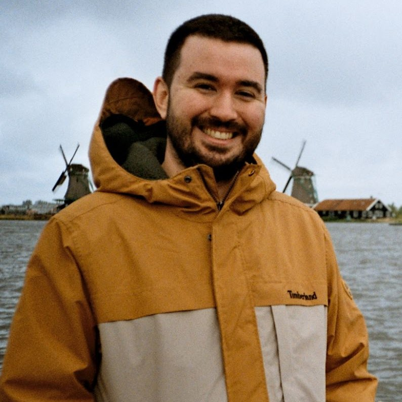

S4
Triple CherryGameplay Programmer● EN JOC
Sistemes de front-end i funcionalitats interactives per a jocs de slots en línia, treballant colze a colze amb desenvolupadors i artistes en productes ja en producció.
Em defineixo com a Game Developer, però és millor que ho comprovis tu mateix quan ens coneguem. Sóc l'Ian, Gameplay Programmer de Barcelona amb experiència professional en sistemes de gameplay, IA i interfície per a títols publicats a PC, mòbil, consola i VR, utilitzant Unity i C#.
Fora dels terminis d'entrega, vaig créixer atrapant molts Pokémon, visc una segona vida a Animal Crossing 🏡 i he ajudat en Mario 🍄 a rescatar la princesa segrestada més vegades de les que puc comptar. Vull treballar en projectes que em facin donar el millor de mi mateix.

Sistemes de front-end i funcionalitats interactives per a jocs de slots en línia, treballant colze a colze amb desenvolupadors i artistes en productes ja en producció.
Sistemes de gameplay i IA a Unity/C# per a NBA Bounce, funcionalitats d'UI per al roguelike Blightstone, i suport post-llançament al pack Super Sports Blast.
Sistemes i funcionalitats de gameplay per a Empatheam, un joc d'aventures 2D liderat per Ramon Nafria, treballant directament amb un petit equip remot.
Vaig cofundar un petit estudi indie centrat en experiències d'escape room en VR (Gotta Get Going: Steam Smugglers, Captain Goldrush), a més de jocs de trivia experimentals per a Android.
Jocs publicats com a part d'un equip d'estudi, des de sistemes de gameplay fins a suport post-llançament en producció.
Jocs indie, game jams i prototips — incloent un joc publicat a Steam, Switch, PlayStation i Xbox.
Escriptura i altre contingut de game dev que no és un joc complet.
També em manejo amb C++, JavaScript, Java i Kotlin, fent servir eines com Git, Jira/Confluence i JetBrains Rider. Parlo català i castellà com a llengües natives, i anglès a nivell professional. Vaig estudiar Continguts Digitals Interactius a l'ENTI–Universitat de Barcelona, després d'un grau tècnic en Animació 2D/3D i Videojocs a l'ITES Barcelona.
M'encantaria saber-ne més.
Enviar correu →